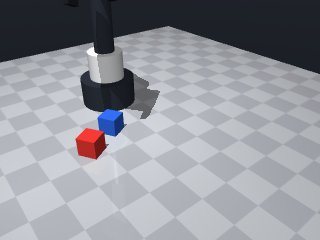

0 demonstrations · reward: gt · perception: real · 8 practice episodes in 1 rounds
Safety layer: 0 halts, 0 clamps.
| role | model | calls | tokens in | tokens out | USD |
|---|---|---|---|---|---|
| coder | moonshotai/Kimi-K3 | 1 | 1,610 | 7,988 | $0.1203 |
| summarizer | nvidia/Nemotron-3_5-Lightning | 0 | 0 | 0 | $0.0000 |
| compute | local | 92 s | $0.0000 | ||
| total | 1 | 1,610 | 7,988 | $0.1203 |
- First attempt at the stack task; no prior results yet. - Perception is noisy (~1 cm per reading, fresh noise each call), so I average several get_pose() readings before every critical action; yaw is averaged with a 4θ trick to respect the cube's 90° symmetry. - Plan: average red pose → approach from above with fingers aligned to red's yaw → slow descend to z=0.015 → grasp → verify holding after a lift → re-average blue pose while it is unoccluded → carry over blue at height, rotating gripper to blue's yaw → slow descend to just above stacked height → release → retreat → verify red's z ≈ blue z + 0.03. - Whole stack attempt is wrapped in a bounded 2-try loop so a failed grasp or a toppled place triggers one recovery attempt. - Moves near cubes are slow (0.04–0.06), travel moves at 0.25; all move_to calls are wrapped against MotionError.
--- round_0/skill.py +++ round_1/skill.py @@ -0,0 +1,87 @@ +import math + + +def run(robot): + # ---------------- helpers ---------------- + def find_by_color(obs, color): + for name, o in obs["objects"].items(): + if o.get("color") == color: + return name + return None + + def avg_pose(name, n=5): + """Average n noisy readings; yaw averaged via 4*theta (90 deg cube symmetry).""" + sx = sy = sz = 0.0 + s4 = c4 = 0.0 + for _ in range(n): + p = robot.get_pose(name) + sx += p["pos"][0] + sy += p["pos"][1] + sz += p["pos"][2] + a = 4.0 * p["yaw"] + s4 += math.sin(a) + c4 += math.cos(a) + yaw = math.atan2(s4, c4) / 4.0 + return (sx / n, sy / n, sz / n), yaw + + def safe_move(x, y, z, yaw=None, speed=None): + try: + return robot.move_to(x, y, z, yaw=yaw, speed=speed) + except Exception as e: + robot.log("move failed:", e) + return None + + # ---------------- identify cubes ---------------- + obs = robot.observe() + red = find_by_color(obs, "red") + blue = find_by_color(obs, "blue") + if red is None or blue is None: + robot.log("could not identify red/blue cubes") + return False + + robot.release() # make sure fingers are open + + for attempt in range(2): + # ----- perceive red ----- + (rx, ry, rz), ryaw = avg_pose(red, 5) + robot.log("red at", rx, ry, rz, "yaw", ryaw) + + # ----- approach and grasp red ----- + if safe_move(rx, ry, 0.09, yaw=ryaw, speed=0.25) is None: + return False + safe_move(rx, ry, 0.015, yaw=ryaw, speed=0.06) + robot.grasp() + robot.move_by(dz=0.09, speed=0.1) + if robot.holding() != red: + robot.log("grasp failed on attempt", attempt) + robot.release() + robot.move_by(dz=0.05, speed=0.1) + continue + + # ----- perceive blue while unoccluded ----- + (bx, by, bz), byaw = avg_pose(blue, 7) + robot.log("blue at", bx, by, bz, "yaw", byaw) + + # ----- carry over blue, aligning yaw (90 deg symmetry) ----- + place_z = bz + 0.033 # red centre ~3 mm above its final stacked height + if safe_move(bx, by, 0.12, yaw=byaw, speed=0.25) is None: + robot.release() + return False + if robot.holding() != red: + robot.log("lost red during carry") + continue + safe_move(bx, by, bz + 0.06, yaw=byaw, speed=0.1) + safe_move(bx, by, place_z, yaw=byaw, speed=0.04) + robot.release() + robot.move_by(dz=0.09, speed=0.1) + + # ----- verify the stack ----- + (nx, ny, nz), _ = avg_pose(red, 5) + (bx2, by2, bz2), _ = avg_pose(blue, 3) + robot.log("after place red z =", nz, "expected ~", bz2 + 0.03) + if nz > bz2 + 0.02 and abs(nx - bx2) < 0.02 and abs(ny - by2) < 0.02: + robot.log("stack succeeded") + return True + robot.log("stack verification failed on attempt", attempt) + + return False

import math
def run(robot):
# ---------------- helpers ----------------
def find_by_color(obs, color):
for name, o in obs["objects"].items():
if o.get("color") == color:
return name
return None
def avg_pose(name, n=5):
"""Average n noisy readings; yaw averaged via 4*theta (90 deg cube symmetry)."""
sx = sy = sz = 0.0
s4 = c4 = 0.0
for _ in range(n):
p = robot.get_pose(name)
sx += p["pos"][0]
sy += p["pos"][1]
sz += p["pos"][2]
a = 4.0 * p["yaw"]
s4 += math.sin(a)
c4 += math.cos(a)
yaw = math.atan2(s4, c4) / 4.0
return (sx / n, sy / n, sz / n), yaw
def safe_move(x, y, z, yaw=None, speed=None):
try:
return robot.move_to(x, y, z, yaw=yaw, speed=speed)
except Exception as e:
robot.log("move failed:", e)
return None
# ---------------- identify cubes ----------------
obs = robot.observe()
red = find_by_color(obs, "red")
blue = find_by_color(obs, "blue")
if red is None or blue is None:
robot.log("could not identify red/blue cubes")
return False
robot.release() # make sure fingers are open
for attempt in range(2):
# ----- perceive red -----
(rx, ry, rz), ryaw = avg_pose(red, 5)
robot.log("red at", rx, ry, rz, "yaw", ryaw)
# ----- approach and grasp red -----
if safe_move(rx, ry, 0.09, yaw=ryaw, speed=0.25) is None:
return False
safe_move(rx, ry, 0.015, yaw=ryaw, speed=0.06)
robot.grasp()
robot.move_by(dz=0.09, speed=0.1)
if robot.holding() != red:
robot.log("grasp failed on attempt", attempt)
robot.release()
robot.move_by(dz=0.05, speed=0.1)
continue
# ----- perceive blue while unoccluded -----
(bx, by, bz), byaw = avg_pose(blue, 7)
robot.log("blue at", bx, by, bz, "yaw", byaw)
# ----- carry over blue, aligning yaw (90 deg symmetry) -----
place_z = bz + 0.033 # red centre ~3 mm above its final stacked height
if safe_move(bx, by, 0.12, yaw=byaw, speed=0.25) is None:
robot.release()
return False
if robot.holding() != red:
robot.log("lost red during carry")
continue
safe_move(bx, by, bz + 0.06, yaw=byaw, speed=0.1)
safe_move(bx, by, place_z, yaw=byaw, speed=0.04)
robot.release()
robot.move_by(dz=0.09, speed=0.1)
# ----- verify the stack -----
(nx, ny, nz), _ = avg_pose(red, 5)
(bx2, by2, bz2), _ = avg_pose(blue, 3)
robot.log("after place red z =", nz, "expected ~", bz2 + 0.03)
if nz > bz2 + 0.02 and abs(nx - bx2) < 0.02 and abs(ny - by2) < 0.02:
robot.log("stack succeeded")
return True
robot.log("stack verification failed on attempt", attempt)
return False